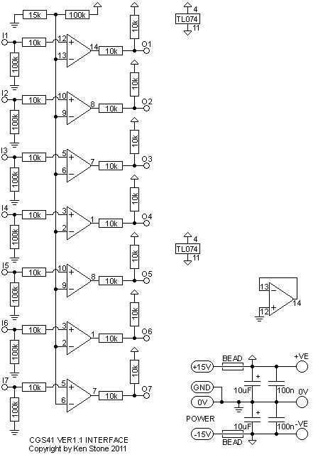

|
The previous version can be found here.
The Diatonic Converter is an adapter for projects such as the Infinite Melody and Gated Comparator, constricting their outputs to the notes of a major or minor diatonic scale instead of the chromatic scale. A single control line selects between major and minor. Three control lines select the note in the scale, and three more select the octave. The key in which the notes are played is determined by sending the appropriate voltage into the unit's mix input, or mixing the output of the unit with other voltage sources externally. Of course a 1 volt per octave VCO is required to convert the control voltage output of this module into an actual pitch. Note that this module is NOT a quantizer. It works with a digital input, NOT an analog one. Some ideas on how to use this module: The Diatonic Converter can be integrated into modules such as those mentioned above, or by using the integral gate interface, can be controlled by other events in the synthesizer, such as keyboard gate signals, LFOs etc. Of note is that if the note and octave control lines were connected directly to a binary counter in ascending order, there would be two of the root note of the scale present at each octave, except for the first and last. This is because the scale as generated contains eight notes per octave, starting with "C" and ending with "C1", so "C1" of the first octave played would be followed immediately by "C" of the second octave played, though an octave higher than its first sounding. While this may seem awkward, when fed from random generators, the doubled weighting of the root note actually is an advantage, reinforcing the notion of the particular key in which the melody is playing. Like the previous version, there are optional integral gate converters to allow the digital inputs used by the diatonic converter core to be wired to sockets on a front panel. This time there are seven, allowing all inputs to be used. A span input allows the span between notes to be adjusted, for microtonal or non-scaled applications. A little on how it works:
The schematic of the core of the Diatonic Converter.
 The integral gate converters.
Construction
The PCB is divided into two sections, the interface and the converter. The interface may be omitted if the board is being hard wired to another PCB with suitable (0-15V) digital outputs. If any external connections are required, the interface circuits will need to be constructed. In my case, the Minor/Major selector is panel mounted, so I only needed to construct one of the interface circuits. It may be easiest to simply install all of the interface components except for the chips, adding those as needed. A REF02 chip has been selected as a 5 volt reference for the circuit. In the event you are unable to obtain one, or if you wish to run the unit on +/-12 volts, an alternative will be needed. On the same area of PCB that is meant to take the REF02, there is provision for installing a 78L05 voltage regulator and 1k load resistor instead. While not as accurate, or as stable, it will be adequate for most people. The pad marked TEMPR. is the REF02 temperature output, and is not used here. There are two adjustments required to set up the converter - the gain of the octave buffer and the gain of the note buffer. Multi-turn trim-pots would be best here, but single turn pots can be successfully used. Pads D and E are for expanding the offset mixer if required. Additional input resistors can be added here. Before you start assembly, check the board for etching faults. Look for any shorts between tracks, or open circuits due to over etching. Take this opportunity to sand the edges of the board if needed, removing any splinters or rough edges. When you are happy with the printed circuit board, construction can proceed as normal, starting with the resistors first, followed by the IC socket if used, then moving onto the taller components. Take particular care with the orientation of the polarized components such as electrolytics, diodes, transistors and ICs. When inserting ICs into sockets, take care not to accidentally bend any of the pins under the chip. Also, make sure the notch on the chip is aligned with the notch marked on the PCB overlay. Capacitors marked "0.1" on the circuit board are 100n decoupling capacitors. You can use monolythic ceramics, or any other capacitor you have to hand. High quality capacitors are not required for decoupling. On this board, one decoupling capacitor is marked 100n.
Set UpWith all control inputs low, the output of the module should be 0V. If not, troubleshoot your work. Set all three of the NOTE inputs to high, and adjust the Note adj. trimmer until the output is 1V. Set all inputs low again, returning the output to 0V. Set the C of the OCT inputs to high, leaving A and B to low and adjust the Oct adj. trimmer until the output is 4V. This concludes the set-up procedure. An example of hard wiring the Diatonic Converter to an Infinite Melody board. Updated diagram to come soon. Notes:
Parts list This is a guide only. Parts needed will vary with individual constructor's needs. If anyone is interested in buying these boards, please check the PCBs for Sale page to see if I have any in stock.
Can't find the parts? See the parts FAQ to see if I've already answered the question. Also see the CGS Synth discussion group.
Article, art & design copyright 2001 by Ken Stone
| |||||||||||||||||||||||||||||||||||||||||||||||||||||||||||||||